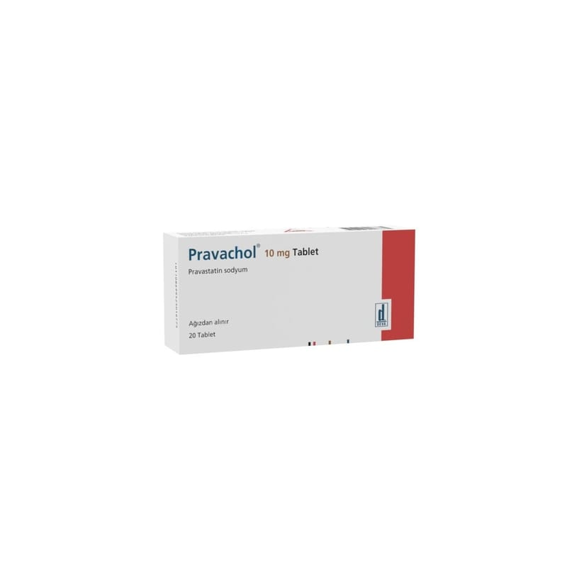

Pravachol 10 mg Tablet, 20 Adet

Ne için kullanılır
KT · Bölüm 1PRAVACHOL’ün etkin maddesi olan pravastatin sodyum, statinler veya HMG-CoA redüktaz inhibitörleri adı verilen bir ilaç grubuna ait olup lipid olarak adlandırılan, kandaki yağlı maddelerin seviyelerinin düzenlenmesinde kullanılır.
PRAVACHOL 10 mg Tablet, beyaz ile hemen hemen beyaz, yuvarlak, bir tarafında DEVA P10 baskılı, bikonveks tabletlerdir. 20 tablet içeren blister ambalajlarda piyasaya sunulmaktadır.
PRAVACHOL, kolestrolün karaciğer tarafından üretimini önler ve buna bağlı olarak kolestrol ve diğer lipidlerin (trigiliserid) vücudunuzdaki seviyesini azaltır. Kanda kolestrol seviyesinin çok yüksek olması durumunda, kolestrol damarların duvarlarına birikerek tıkanmasına neden olur. Bu duruma damar sertliği (ateroskleroz) denir ve aşağıdaki durumlara neden olabilir: Kalbi besleyen bir damarın kısmen tıkanması sonucu oluşan gögüs ağrısı (anjina pektoris), Kalbi besleyen bir damarın tamamen tıkanması sonucu oluşan kalp krizi (miyokart infarktüsü),
Beyni besleyen bir damarın tamamen tıkanması sonucu oluşan inme (serebrovasküler olay).
PRAVACHOL, aşağıdaki durumlarda kullanılmaktadır: Kan kolesterol seviyeniz yüksekse Diyete ve egzersiz, kilo verme gibi diğer tedavilere cevabın yetersiz kaldığı durumlarda diyete ilave olarak kullanılır. Primer korunma Diyete ilave olarak, ağır veya orta kan kolesterol seviyesi yüksek ve kardiyovasküler olay riski yüksek olan hastalarda, kardiyovasküler hastalığa bağlı ölüm oranının ve hastalığa yol açma oranının azaltılmasında kullanılır. Sekonder koruma Diğer risk faktörlerinin düzeltilmesine ilave olarak, stabil olmayan anjina pektorisi (kalbi besleyen damarların daralması/tıkanması ile ortaya çıkan göğüs ağrısı) veya geçmişte kalp krizi geçirmiş olan ve normal veya yükseltilmiş kolesterol seviyesine sahip hastalarda, kardiyovasküler hastalığa bağlı ölüm oranının ve hastalığa yol açma oranının azaltılmasında kullanılır. Organ naklinden sonra Solid organ (böbrek, kalp, karaciğer, pankreas gibi katı organ) naklini takiben bağışıklık sistemini baskılayıcı tedavi alan hastalarda nakil sonrası kandaki lipid düzeyinin düşürülmesinde kullanılır.